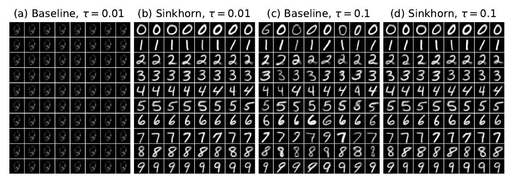
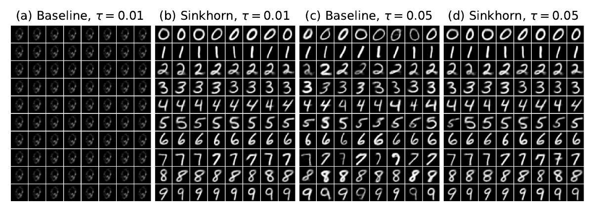
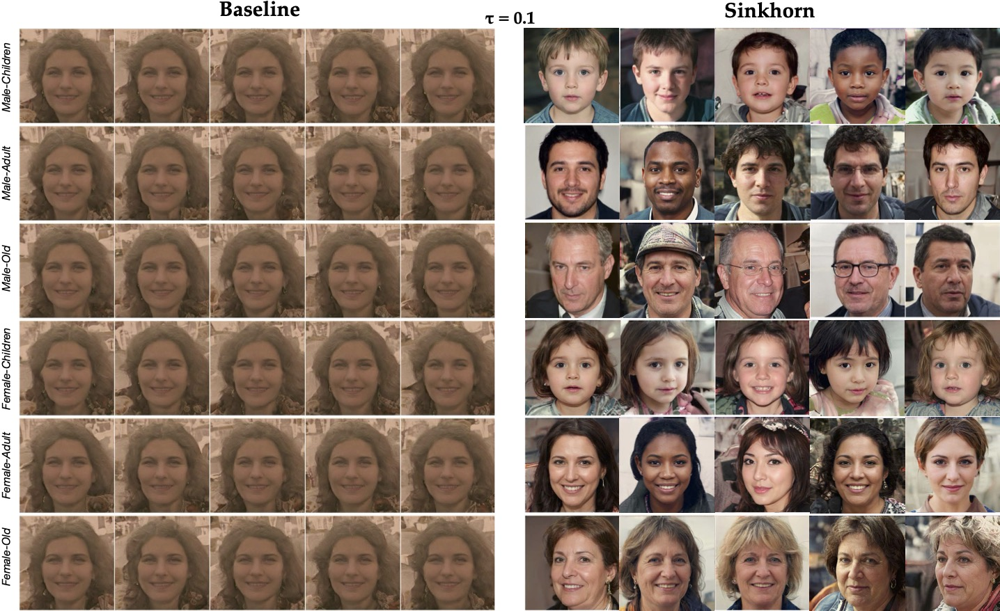
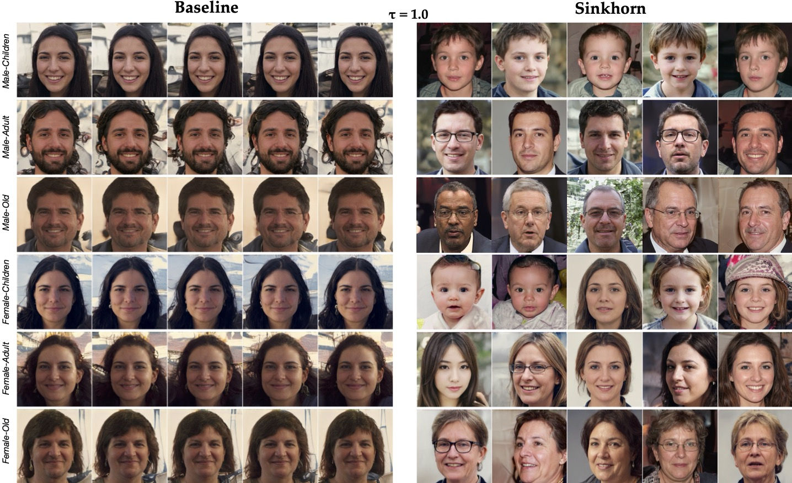
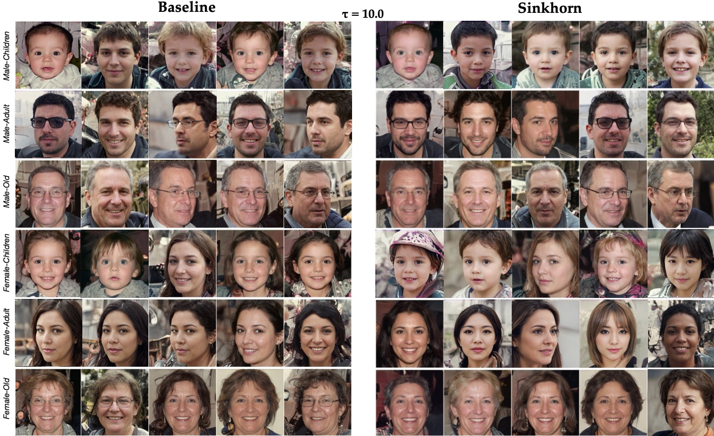

A drifting generator is driven by two forces: attraction toward real data and repulsion from itself. Under heuristic row-normalized couplings, these forces can cancel before the model has matched the data, leading to low-temperature collapse. We connect this dynamics to a Sinkhorn-divergence gradient flow and show that Sinkhorn scaling provides the right fix: the forces balance only when the generated and data distributions match.
We establish a theoretical link between the recently proposed “drifting” generative dynamics and gradient flows induced by the Sinkhorn divergence. In a particle discretization, the drift field admits a cross-minus-self decomposition: an attractive term toward the target distribution and a repulsive/self-correction term toward the current model, both expressed via one-sided normalized Gibbs kernels. We show that Sinkhorn divergence yields an analogous cross-minus-self structure, but with each term defined by entropic optimal-transport couplings obtained through two-sided Sinkhorn scaling (i.e., enforcing both marginals). This provides a precise sense in which drifting acts as a surrogate for a Sinkhorn-divergence gradient flow, interpolating between one-sided normalization and full two-sided Sinkhorn scaling. Crucially, this connection resolves an identifiability gap in prior drifting formulations: leveraging the definiteness of the Sinkhorn divergence, we show that zero drift (equilibrium of the dynamics) implies that the model and target measures match. Experiments show that Sinkhorn drifting reduces sensitivity to kernel temperature and improves one-step generative quality, trading off additional training time for a more stable optimization, without altering the inference procedure used by drift methods. These theoretical gains translate to strong low-temperature improvements in practice: on FFHQ-ALAE at the lowest temperature setting we evaluate, Sinkhorn drifting reduces mean FID from 187.7 to 37.1 and mean latent EMD from 453.3 to 144.4, while on MNIST it preserves full class coverage across the temperature sweep.
Keywords: Drifting · Optimal Transport · One-Step Generative Models
MNIST


| Kernel | τ | Baseline EMD | Sinkhorn EMD | Baseline Acc | Sinkhorn Acc |
|---|---|---|---|---|---|
| Gaussian | 0.01 | 73.21 | 7.71 | 9.99% | 100.00% |
| Gaussian | 0.10 | 5.63 | 6.91 | 95.00% | 100.00% |
| Laplacian | 0.01 | 73.21 | 7.14 | 9.99% | 100.00% |
| Laplacian | 0.05 | 4.46 | 6.34 | 96.17% | 99.97% |
Representative MNIST checkpoints aligned with the panels above. Low-accuracy baseline rows indicate collapse at small temperature.
FFHQ-ALAE
Each row is a class; Baseline is on the left and Sinkhorn is on the right.



| τ | Baseline FID | Sinkhorn FID | Baseline EMD | Sinkhorn EMD |
|---|---|---|---|---|
| 0.1 | 187.7 | 37.1 | 453.3 | 144.4 |
| 1.0 | 146.3 | 33.7 | 370.5 | 137.6 |
| 10.0 | 45.3 | 33.9 | 156.4 | 138.5 |
Mean class-conditional FFHQ results across all six classes. Sinkhorn improves both image FID and latent EMD at every temperature.
BibTeX
@article{he2026sinkhorndrifting,
title = {Sinkhorn-Drifting Generative Models},
author = {He, Ping and Khangaonkar, Om and Pirsiavash, Hamed and Bai, Yikun and Kolouri, Soheil},
journal = {arXiv preprint arXiv:XXX},
year = {2026}
}